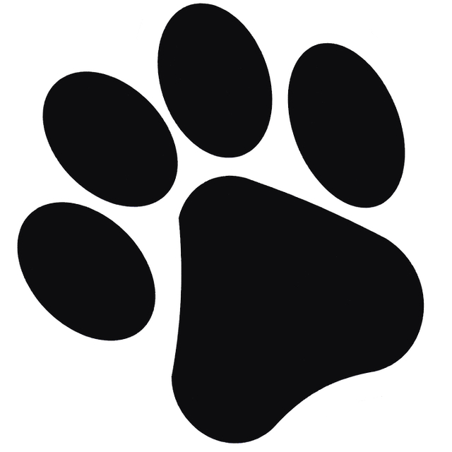

Sobre nosotros
CatMatch es una iniciativa que promueve la adopción responsable de gatitos y brinda apoyo al bienestar felino a través de una plataforma web solidaria.


Conectar gatitos con hogares responsables mediante una plataforma segura, transparente y amorosa que fomente la adopción ética y el cuidado felino.
Ser una plataforma referente en adopción felina responsable a nivel nacional, reconocida por su compromiso con el bienestar animal y su impacto social.
En Cat Match, nuestra base es la Responsabilidad absoluta en cada adopción, garantizando el bienestar a largo plazo de los gatitos mediante procesos rigurosos.
Como estudiantes de Arte y Diseño Gráfico Empresarial, decidimos canalizar nuestra formación y pasión en un proyecto que realmente hiciera una diferencia.